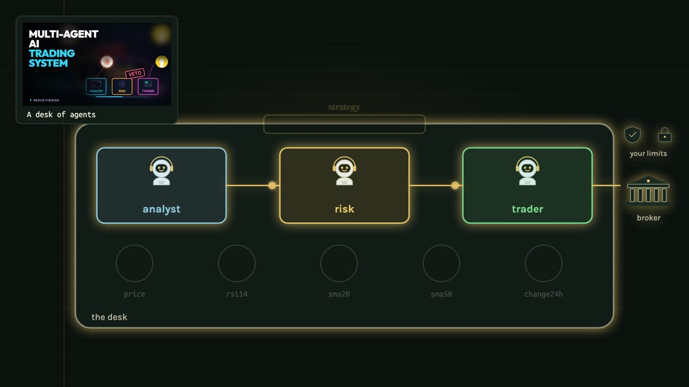
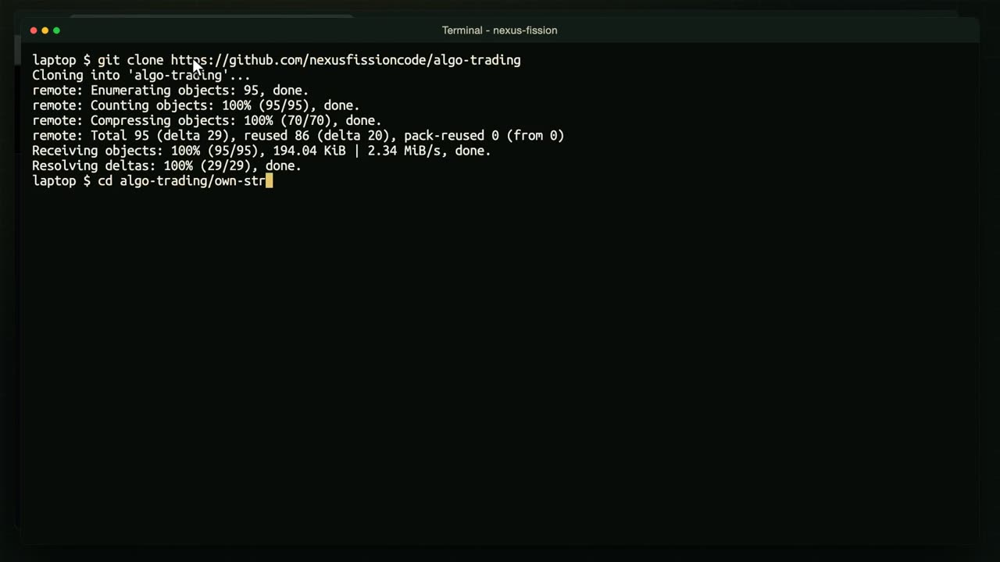
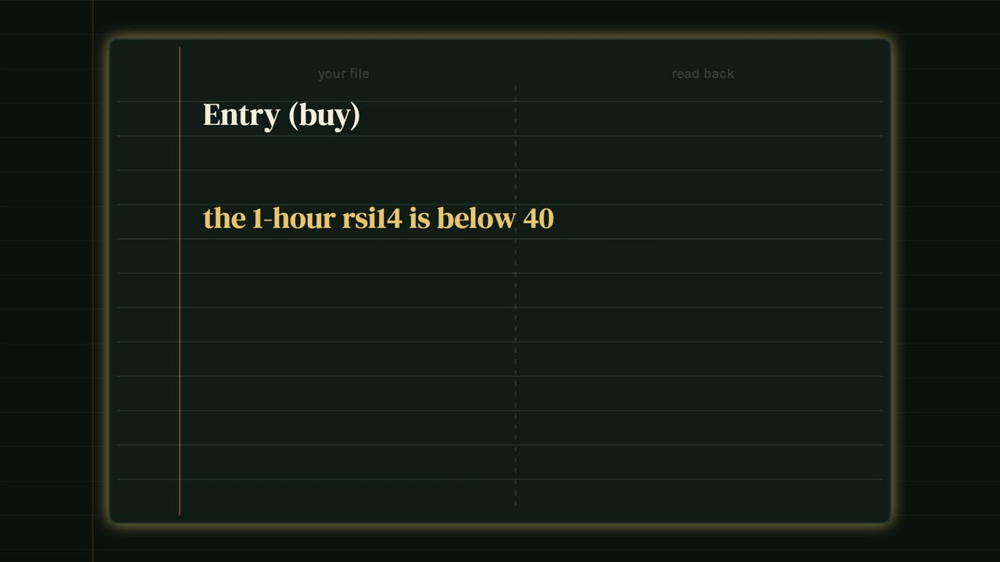
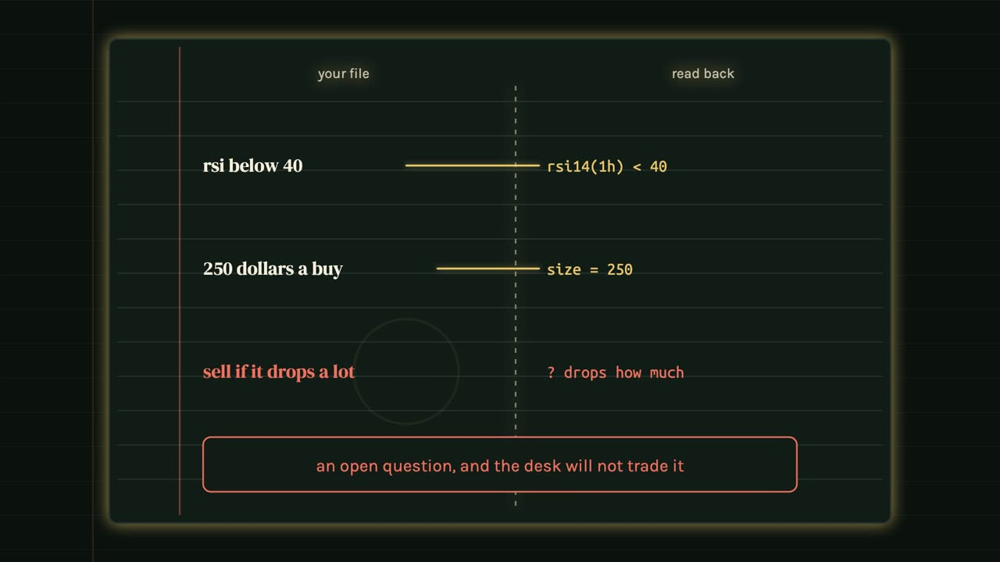
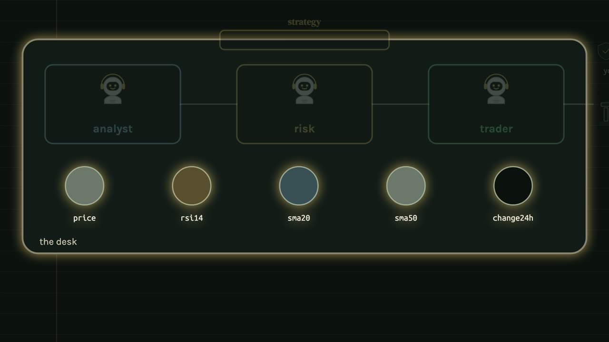
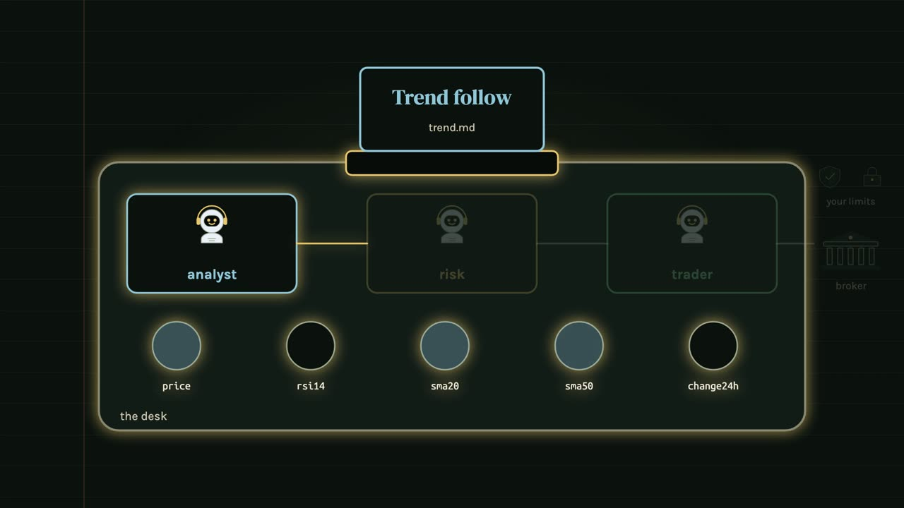
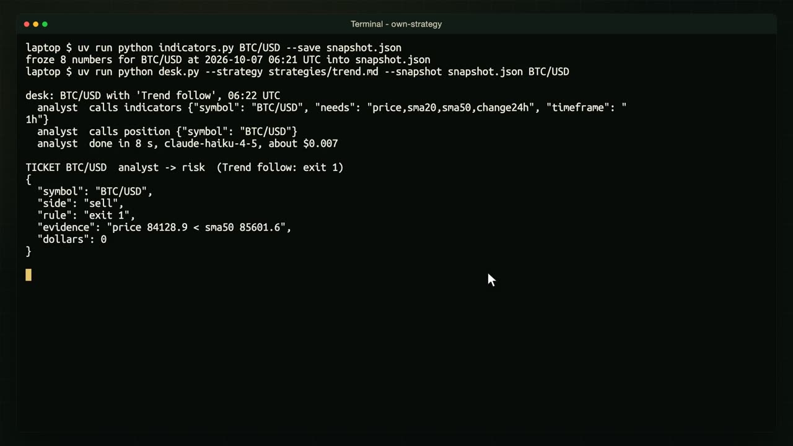
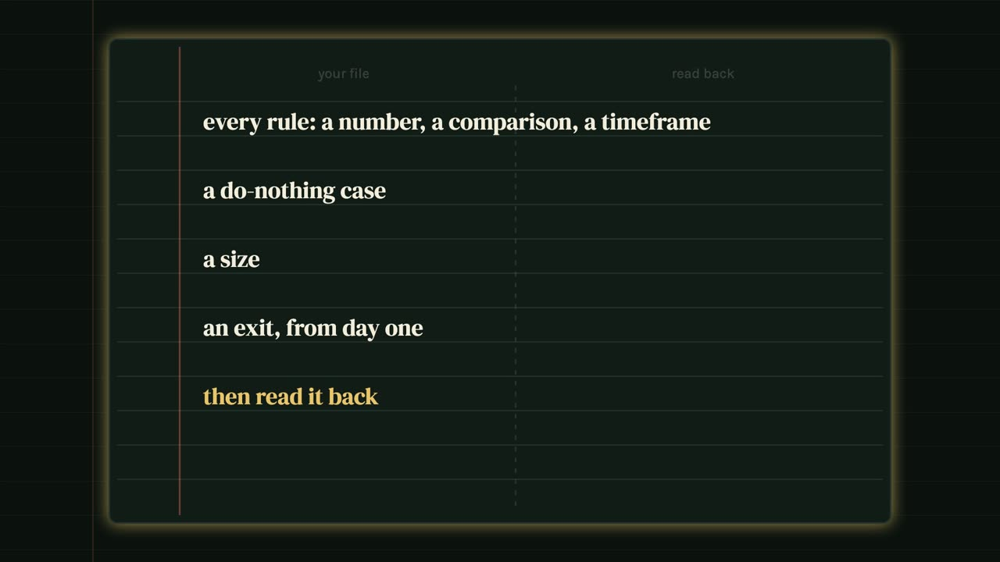

Lessons / AI trading, step by step
Turn your trading strategy into a file an AI agent team follows (Claude Agent SDK + Alpaca)
Your trading strategy in one plain-English file. A desk of Claude agents reads it back before it may trade, follows it, and names the rule behind every ticket - while your hard limits stay in code. Swap the file and the same desk becomes a different trader. Paper trading only; the example strategies are placeholders, not advice.
Prices and numbers are as of the video's publication, October 11, 2026.
The code for this lesson: github.com/nexusfissioncode/algo-trading/tree/main/own-strategy
Where we are Watch from 0:43

In the last video we built a desk of three AI agents on the Claude Agent SDK. It is linked in the description, along with the earlier videos, and everything this one needs is set up again here.
An analyst that reads the market, a risk manager that can say no, and a trader that only places what risk signs, with your hard limits in code on the way to the broker.
But its strategy was baked into the analyst's instructions. To trade your own way, you had to edit the code. Today the strategy comes out of the code, into a file that slots into the desk.
Setup Watch from 1:16

The code is in the channel's repository, algo trading, with a folder for every video. This one is own strategy, the newest folder, beside the desk from last time. I copy the address, clone the whole repository in a terminal, and look inside the new folder.
The same seats as last time, plus two new files: the read-back, which we'll meet shortly, and a folder of strategies.
Four strategy files: a template, two examples, and one deliberately vague. Then U V installs the packages with its sync command, the Agent SDK among them. I've sped up the waiting.
And the keys: the two Alpaca paper keys and a Claude sign-in token, each in an environment variable, printed as the word set. The last video shows where each one comes from.
From a strategy to rules Watch from 2:04

First, the hard part, and it has nothing to do with code. A strategy in your head is full of words a machine cannot check. Buy when momentum looks strong. How strong? Measured how? Over what time? An agent told to follow that will guess, and guess differently every run.
So every rule gets rewritten until a machine could check it. The one-hour RSI is below 40. RSI is a zero to 100 score of how hard the price has been pushed up or down lately.
That rule has three things: a number, a comparison, and a timeframe. Every rule in the file needs all three.
Here is the template, the file you copy to write your own. One heading per question a trader has to answer.
Which coins it trades, written the way the broker names them.
The numbers it needs measured: the price, the RSI, moving averages, and on which bars.
When to buy, as a condition with a number.
When to stand aside, even if the buy rule says yes.
How much to buy each time, as a fixed amount.
Put together, a strategy is one page: which coins, which numbers, when to buy, when to stand aside, and how much.
And the part most people forget to write down: when to get out. Every position needs an exit rule from day one.
That page is the cartridge. Slot it into the desk, and the desk trades your way. Let's look at the last heading, and two finished examples.
The exit: sell the whole position when a condition is met. Now the first example, the RSI dip buy.
Both examples are placeholders to show the format. They are not advice, and nobody has tested them for profit. Your strategy goes here, not mine.
It buys a dip: the one-hour RSI below 40.
And it gets out when the RSI recovers above 65, or when the price is 3% or more under what it paid.
The second example does the opposite. It buys strength: the price above its 50 hour average, with the 20 hour average above that too. A moving average is just the average closing price over that many bars.
And it gets out the moment the price drops back under the 50 hour average. Two very different traders, written in the same shape.
One thing does not move into the file. Your hard limits stay in code: only the coins you allow, $1,000 at most per order, never buying a coin you already hold, and the hook that only lets through the exact order risk signed.
A strategy file can make the desk more careful. It can never make it less careful. No sentence in a file can talk the guard round.
Read it back Watch from 4:45

But who checks that your file can really be followed? Before a strategy may trade, it is read back. On one side, your file.
On the other, an agent writes every rule back as a check a machine can run. Where it lines up, you can see the agent understood you.
Where a rule has nothing to measure, the agent does not guess. It asks a question, and until the file answers it, the desk refuses to trade. Let's try it on the vague one.
The vague file, written the way people really talk about a strategy.
Buy when momentum looks strong and the price feels cheap. Sell if it drops a lot. A sensible amount. I run the read-back on it, with the stronger model, because this is judgement.
Four questions. It will not guess what strong means, or cheap, or a lot.
And a sensible amount is not a number either.
Refused: fix the file, then read it back again. And if I try to run the desk with it anyway,
the desk will not trade it. Not because an agent said so, but because the code checks for a clean read-back of this exact file. Change one word and it has to be read back again.
Each of those questions points at one vague word. Strong, cheap, a lot, sensible.
Answer them with numbers, and you have written the dip strategy: an RSI below 40, stand aside when the price is far under its average, sell 3% under your entry, $250 a buy. Now the read-back on the real files.
Now a real file: I run the read-back on the dip strategy.
This is the agent's read-back: every rule in your file gets a short name, and beside it, the same rule rewritten as a check a machine can run.
Entry one becomes the one-hour RSI under 40. Then the stand-aside rule, the size of $250, and both exits: the RSI over 65, or the price 3% under what you paid. The last line lists the numbers it will have to measure.
Accepted: every rule can be checked without guessing. Then I run the read-back on the trend file as well.
And the trend strategy, accepted too. Both files are now cleared to trade.
The numbers it needs Watch from 6:57

Each strategy asks for its own numbers. The dip strategy needs the price, the RSI and the 50 hour average.
The trend strategy needs the price, both averages and the day's change. One small tool measures any of them, from Alpaca's real prices, so no agent ever does the maths in its head.
And it can freeze them all into a snapshot, so two strategies can be compared on exactly the same moment.
I ask the tool for bitcoin's price, its RSI, the 20 hour average and the 50 hour average, on one-hour bars, live from Alpaca.
Bitcoin around 84,300, an RSI of 34, and the price below both averages. Now the freeze.
Eight numbers for bitcoin, frozen into a snapshot file with the time they were measured. Both strategies will read exactly these.
Same moment, two traders Watch from 7:48

The paper account starts with nothing held. First, the trend file goes into the desk, with the frozen snapshot.
Its analyst measures what the trend file asks for and checks its rules in order. Here it is, running.
The desk with the trend strategy, on bitcoin. The analyst measures the price and both averages from the snapshot, and checks whether it holds any bitcoin. I've sped up the waiting.
Its ticket names its rule: none fits, so no buy.
And its evidence, from the frozen numbers: the price is under the 50 hour average, and so is the 20. No trend to follow.
Now the only thing I change is the file. Out goes the trend strategy, in goes the dip strategy, with the same snapshot.
Different rules, so different gauges: the price, the RSI and the 50 hour average. Same desk, same moment.
Nothing to do, and that is logged too. Now the very same command, with only the dip file swapped in, on the same frozen numbers.
Entry one: its first buy rule has fired.
The evidence: an RSI of 34, under 40, and the price only a little under its average, well short of 5%, so the stand-aside rule does not apply. Risk measures the numbers itself, and agrees.
Bought, $250, exactly the size the file asked for, signed by risk and placed by the trader through the guard and the hook. Then over to the browser, to the broker's own list of orders.
And at the broker, the paper account's newest order: bitcoin, a market buy, filled.
So, the same moment, two traders. The trend file saw a falling price and waited. The dip file saw an oversold price and bought. Neither is right or wrong: each did exactly what its file said.
Same numbers, different rules, different decisions. That is your strategy, running on a desk of agents, with nothing changed in the code. And a strategy is not finished until it gets out.
Getting out Watch from 9:52

The account now holds that bitcoin. Suppose you change your mind and run the trend file again. A fresh snapshot, and the desk with the trend strategy.
This time the analyst sees the position, so it checks the exit rules first. Exit one.
The price is under its 50 hour average, so the trend file says get out. Risk checks the numbers, and that the account really holds bitcoin, and approves a sell. Watch the trader's first try: it asks to sell B T C, but risk signed bitcoin against the dollar, so the hook refuses it, and the trader tries again with the exact order.
Sold, on the second try, with the exact symbol risk signed. The trend file's exit rule did its job, on a position the other strategy had opened. Now the broker's own list of orders, to check it really happened.
And at the broker, the sell, filled. The position is closed, and the account is flat again.
That refusal happened on its own. A model wrote the symbol slightly differently from the order that was signed, and the hook, plain code, would not let a single character differ.
The exact order went through. Your strategy decides what to do. Your code decides what is allowed.
Yours next Watch from 11:07

To write yours, copy the template and go through it with this list. Every rule has a number, a comparison and a timeframe. There is a case for doing nothing. There is a size, and there is an exit, from day one.
Then read it back, and answer every question it asks, until it is accepted.
The template, both examples and the whole desk are in the channel's repository, in the own strategy folder.
One last thing. In the last video the desk ran on a clock: cron woke it every few hours, it measured, checked, and went back to sleep. That is polling, and between two runs it sees nothing.
It does not have to wait for the clock. A TradingView alert can call a webhook the moment your chart condition fires, and that webhook can start this same desk with your strategy file. You can stitch the two together, too: the alert wakes it at once, and the clock catches anything it missed.
Two earlier videos build those pieces: a TradingView alert waking an AI that places the order, and the same setup running all day on a free server. Both are linked in the description. Write your file, read it back, and let the desk follow it.